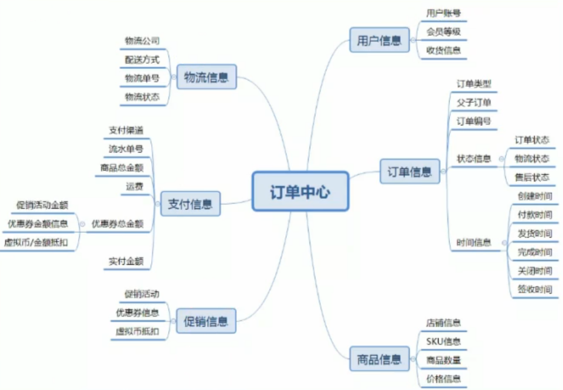
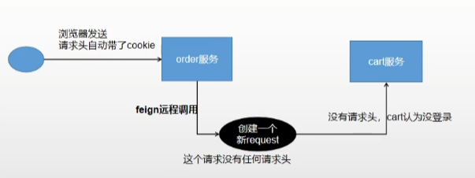
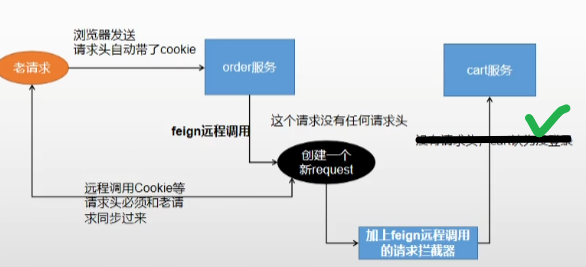
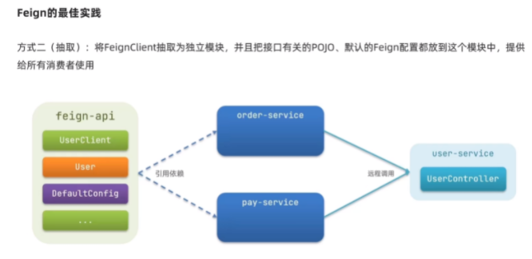
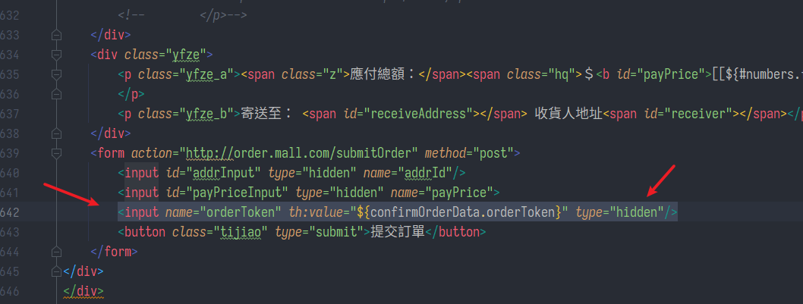

確認訂單、feign請求頭問題
SpringBoot微服務項目筆記-19
商城訂單模組
訂單通常是最複雜的模組之一
- 涉及三流:
- 信息流：商品信息、優惠信息
- 資金流：退款、付款
- 物流：發送、退貨

訂單流程
訂單流程是指從訂單產生到完成的過程
-
不同的產品類型或業務類型在系統中的流程會千差萬別，比如線上實物訂單和虛擬訂單與o20訂單等，所以需要根據不同的類型進行構建訂單流程
-
不管類型如何訂單都包括正向流程和逆向流程，對應的場景就是購買商品和退換貨流程，正向流程就是一個正常的網購步驟
- 訂單生成-> 支付訂單-> 賣家發貨-> 確認收貨-> 交易成功
-
而每個步驟的背後，訂單是如何在多系統之間交互流轉的，可概括如下圖

正向流程
- 訂單創建前需要預覽訂單，選擇收貨信息等
- 訂單創建需要鎖定庫存，庫存有才可創建，否則不能創建
- 訂單創建後超時未支付需要解鎖庫存
- 支付成功後，需要進行拆單，根據商品打包方式，所在倉庫，物流等進行拆單
- 支付的每筆流水都需要記錄，以待查賬
- 訂單創建，支付成功等狀態都需要給MQ發送消息，方便其他系統感知訂閲
逆向流程
- 修改訂單，用户沒有提交訂單，可以對訂單一些信息進行修改，比如配送信息，
- 優惠信息，及其他一些訂單可修改範圍的內容，此時只需對數據進行變更即可。
- 訂單取消，用户主動取消訂單和用户超時未支付，兩種情況下訂單都會取消訂單，而超時情況是系統自動關閉訂單，所以在訂單支付的響應機制上面要做支付的
訂單狀態
- 待付款: 用户提交訂單後，訂單進行預下單，目前主流電商網站都會便於用户快速完成支付，需要注意的是待付款狀態下可以對庫存進行鎖定，鎖定庫存需要配置支付超時時間，超時後將自動取消訂單，訂單變更為關閉狀態
- 已付款/待發貨: 用户完成訂單支付，訂單系統需要記錄支付時間，支付流水單號便於對賬，訂單下放到WMS系統，倉庫進行調撥，配貨，分揀，出庫等操作
- 待收貨/已發貨: 倉儲將商品出庫後，訂單進入物流環節，訂單系統需要同步物流信息，便於用户實時知悉物品物流狀態
- 已完成: 用户確認收貨後，訂單交易完成。後續支付側進行結算，如果訂單存在問題進入售後狀態
- 已取消: 付款之前取消訂單。包括超時未付款或用户商户取消訂單都會產生這種訂單狀態
- 售後中: 用户在付款後申請退款，或商家發貨後用户申請退換貨。售後也同樣存在各種狀態，當發起售後申請後生成售後訂單，售後訂單狀態為待審核，等待商家審核，商家審核通過後訂單狀態變更為待退貨，等待用户將商品寄回，商家收貨後訂單狀態更新為待退款狀態，退款到用户原賬户後訂單狀態更新為售後成功
前端頁面
等待付款，詳情頁：


訂單頁：

收銀頁：

整理各種POJO與規範
- feign包放在common模組下，用TO(Transfer Object)來跨模組接收、傳遞物件
- VO(View Object) 是專門返回給前端、給人看的東西
- Entity實體，也稱為PO(Persistant Object)，屬性基本和資料表欄位一一對應。一個實體即是真實存在的一筆資料，必須要有唯一標識(例如id)以區分其它實體
- DAO(Data Access Object)封裝了PO在資料庫的CRUD等操作
實作

登入攔截
點結算時，沒登入就讓用戶先去登入
- LoginUserInterceptor.java
- 記得造一個config實現WebMvcConfigurer註冊攔截器
- 攔截器記得用
@Component讓spring載入
/**
* 登入攔截器
* 從session中獲取了登入信息（redis中），封裝到了ThreadLocal中
*/
@Component
public class LoginUserInterceptor implements HandlerInterceptor {
public static ThreadLocal<MemberResponseTo> loginUser = new ThreadLocal<>();
@Override
public boolean preHandle(HttpServletRequest request, HttpServletResponse response, Object handler) throws Exception {
// 獲取登入的用戶信息
MemberResponseTo attribute = (MemberResponseTo) request.getSession().getAttribute(LOGIN_USER);
if (attribute != null) {
// 把登入後用戶的信息放在ThreadLocal裡面進行保存
loginUser.set(attribute);
return true;
} else {
// 未登入，返回登入頁面
response.setContentType("text/html;charset=UTF-8");
PrintWriter out = response.getWriter();
out.println("<script>alert('請先進行登入，再進行後續操作！');location.href='http://auth.mall.com/login.html'</script>");
// session.setAttribute("msg", "請先進行登入");
// response.sendRedirect("http://auth.mall.com/login.html");
return false;
}
}
}
訂單確認頁
- 從購物車點了去結算，就來到這

- OrderConfirmVo.java
/**
* 訂單確認頁需要用的數據
*/
public class OrderConfirmVo {
/**
* 會員收貨地址列表
**/
@Getter
@Setter
List<MemberAddressTo> memberAddressTos;
/**
* 所有選中的購物項【購物車中的所有項】
**/
@Getter
@Setter
List<OrderItemTo> items;
/**
* 優惠券（會員積分）
**/
@Getter
@Setter
private Integer integration;
/**
* 防止重複提交的令牌 冪等性
**/
@Getter
@Setter
private String orderToken;
@Getter
@Setter
Map<Long, Boolean> stocks;
public Integer getCount() {
Integer count = 0;
if (items != null && items.size() > 0) {
for (OrderItemTo item : items) {
count += item.getCount();
}
}
return count;
}
/**
* 總商品金額
**/
//BigDecimal total;
//計算訂單總額
public BigDecimal getTotal() {
BigDecimal totalNum = BigDecimal.ZERO;
if (items != null && items.size() > 0) {
for (OrderItemTo item : items) {
//計算當前商品的總價格
BigDecimal itemPrice = item.getPrice().multiply(new BigDecimal(item.getCount().toString()));
//再計算全部商品的總價格
totalNum = totalNum.add(itemPrice);
}
}
return totalNum;
}
}
- OrderWebController.java
// 去結算確認頁
@GetMapping(value = "/toTrade")
public String toTrade(Model model, HttpServletRequest request) throws ExecutionException, InterruptedException {
OrderConfirmVo confirmVo = orderService.confirmOrder();
model.addAttribute("confirmOrderData", confirmVo);
// 展示訂單確認的數據
return "confirm";
}
Service層
- 這邊有2個知識點: feign丟失請求頭、防重令牌，在下面分別展開
- OrderServiceImpl.java
/**
* 訂單確認頁返回需要用的數據
*
* @return
*/
@Override
public OrderConfirmVo confirmOrder() throws ExecutionException, InterruptedException {
// 構建OrderConfirmVo
OrderConfirmVo confirmVo = new OrderConfirmVo();
// 獲取當前用戶登入的信息
MemberResponseTo memberResponseTo = LoginUserInterceptor.loginUser.get();
// 獲取當前線程請求頭信息(解決Feign異步調用丟失請求頭問題)
RequestAttributes requestAttributes = RequestContextHolder.getRequestAttributes();
// 開啟第一個異步任務
CompletableFuture<Void> addressFuture = CompletableFuture.runAsync(() -> {
// 每一個線程都來共享之前的請求數據
RequestContextHolder.setRequestAttributes(requestAttributes);
// 遠程查詢所有的收貨地址列表
List<MemberAddressTo> address = memberFeignService.getAddress(memberResponseTo.getId());
confirmVo.setMemberAddressTos(address);
}, threadPoolExecutor);
// 開啟第二個異步任務
CompletableFuture<Void> cartInfoFuture = CompletableFuture.runAsync(() -> {
// 每一個線程都來共享之前的請求數據【解決異步ThreadLocal 無法共享數據】
RequestContextHolder.setRequestAttributes(requestAttributes);
// 遠程查詢購物車所有選中的購物項
List<OrderItemTo> currentCartItems = cartFeignService.getCurrentCartItems();
confirmVo.setItems(currentCartItems);
// feign在遠程調用之前要構造請求，會調用很多的攔截器
}, threadPoolExecutor).thenRunAsync(() -> {
List<OrderItemTo> items = confirmVo.getItems();
// 獲取全部商品的id
List<Long> skuIds = items.stream()
.map((itemVo -> itemVo.getSkuId()))
.collect(Collectors.toList());
// 遠程查詢商品庫存信息
R skuHasStock = wareFeignService.getSkuHasStock(skuIds);
List<SkuStockVo> skuStockVos = skuHasStock.getData("data", new TypeReference<List<SkuStockVo>>() {
});
if (skuStockVos != null && skuStockVos.size() > 0) {
// 將skuStockVos集合轉換為map
Map<Long, Boolean> skuHasStockMap =
skuStockVos.stream().collect(Collectors.toMap(SkuStockVo::getSkuId, SkuStockVo::getHasStock));
confirmVo.setStocks(skuHasStockMap);
}
}, threadPoolExecutor);
// 查詢用戶積分
Integer integration = memberResponseTo.getIntegration();
confirmVo.setIntegration(integration);
// 價格數據計算寫在VO了
// 防重令牌(防止表單重複提交)
// 為用戶設置一個token，三十分鐘過期時間（存在redis）
String token = UUID.randomUUID().toString().replace("-", "");
redisTemplate.opsForValue().set(USER_ORDER_TOKEN_PREFIX + memberResponseTo.getId(), token, 30,
TimeUnit.MINUTES);
confirmVo.setOrderToken(token);
CompletableFuture.allOf(addressFuture, cartInfoFuture).get();
return confirmVo;
}
feign丟失請求頭

-
feign的本質也是http request，它的底層代碼會造一個RequestTemplate模板，在這時候會丟失原有的請求頭訊息(cookie沒了)
- 跟nginx轉發丟失host有點像
-
可以在feign調用的時候就不要依賴cookie等請求頭訊息，額外傳送例如userId等訊息作為參數
保留頭解法

-
那個RequestTemplate構造的時候工廠會調用它自己的RequestInterceptor(預設是空)，我們手動重寫其中的apply方法，在這邊把頭加回去
- 透過Spring給的RequestContextHolder來暫存頭資訊，這玩意就是封裝過的ThreadLocal
-
FeignConfig.java
-
註解
@Configuration -
在feign接口指定使用設定，例如:
-
@FeignClient(name = "cart", configuration = FeignConfig.class) public interface CartFeignService {
-
/**
* feign攔截器功能
* 解決feign 遠程請求頭丟失問題
**/
@Configuration
public class FeignConfig {
@Bean("requestInterceptor")
public RequestInterceptor requestInterceptor() {
RequestInterceptor requestInterceptor = new RequestInterceptor() {
@Override
public void apply(RequestTemplate template) {
System.out.println("feign遠程調用，攔截包裝請求頭");
// 使用RequestContextHolder拿到剛進來的請求數據
ServletRequestAttributes requestAttributes = (ServletRequestAttributes) RequestContextHolder.getRequestAttributes();
if (requestAttributes != null) {
HttpServletRequest request = requestAttributes.getRequest();//老請求
if (request != null) {
// 同步請求頭的數據（主要是cookie）
// 把老請求的cookie值放到新請求上來，進行一個同步
String cookie = request.getHeader("Cookie");
template.header("Cookie", cookie);
}
}
}
};
return requestInterceptor;
}
}
- 我還是有點沒弄清它這個設定載入的細節，因為我feign包是放在common之下，當我把FeignConfig也放在common，就需要在註解指定configuration = FeignConfig.class才能生效
- 關於Feign設定的細節參考 : https://www.twblogs.net/a/5da0a13ebd9eee541c34e853
- 我當初是看了這篇 https://www.cnblogs.com/mindzone/p/15315273.html 決定把feing放在common的，我感覺這樣確實比較整齊

異步問題
- 然而又有問題，因為一個老請求進來，我們是開線程池去異步調用各個feign，相當於換線程了，所以調用之前要手動共享請求的資料
// 獲取當前線程請求頭信息(解決Feign異步調用丟失請求頭問題)
RequestAttributes requestAttributes = RequestContextHolder.getRequestAttributes();
// 開啟第一個異步任務
CompletableFuture<Void> addressFuture = CompletableFuture.runAsync(() -> {
// 每一個線程都來共享之前的請求數據
RequestContextHolder.setRequestAttributes(requestAttributes);
// 遠程查詢所有的收貨地址列表
List<MemberAddressTo> address = memberFeignService.getAddress(memberResponseTo.getId());
confirmVo.setMemberAddressTos(address);
}, threadPoolExecutor);
返回問題
- 被遠程調用的controller，想要它返回To類，在方法上要記得註解
@ResponseBody，或是直接整個用@RestController
防重令牌
- 每次來到確認頁，生成一個隨機UUID的令牌，開頭以用戶ID命名，並且設有過期時間
- 把這個令牌也返回給前端，當用戶提交訂單時，會帶上這個令牌

- 如果用戶在確認頁F5，會刷新令牌。後續驗證涉及覓等性問題，下章繼續
小結
項目模組的管理
- 本來學了一招是建一個空的父模組用
<dependencyManagement>統一管理版本，然而在分布式微服務項目我感覺這又不太好- 第一個缺點是每次新建子模組都要調整
<parent> - 第二是多了一層依賴到了分布式反而變得不直觀
- 專案內必定有common模組，既然大家都要引用它，靠它就能實現版本管理，父模組功能重復了
- 第一個缺點是每次新建子模組都要調整
- 我想的是既然大家都會引用common，那共通性的依賴就在common統一管理版本。而模組自己額外引用的依賴，就靠自己管理版本，這樣就比較直觀、獨立，不會想看個版本還要翻好幾層
- 另外就是feign位置，我感覺還是統一抽出放在common更好，有跨模組間溝通的bean也都放在這邊的TO包下
- 其他子模組的VO就專注於自己返回給前端的用途，這樣就不會搞得每個模組都有一堆VO跟TO很亂，也可以杜絕有時候想偷懶把VO與TO混用的可能
記一個啟動服務的BUG
- 我也不確定到底動到哪邊，大概是批次取代錯字的時候改到
- 呈現的BUG狀態就是啟動A服務的時候，A服務載入的竟然是B服務的application.properties，呈現一種混血狀態，然而怎麼復原明明就都跟以前一樣了，卻還是不行，匪夷所思
- 解法: 把所有target資料夾全砍了，各個服務重新build一次就好了
- 教訓: 多多傳git方便出事好還原、有時候BUG可能發生在建構出來的檔案，可以整個資料夾砍掉重新git clone一份乾淨的下來
上次修改於 2022-02-05